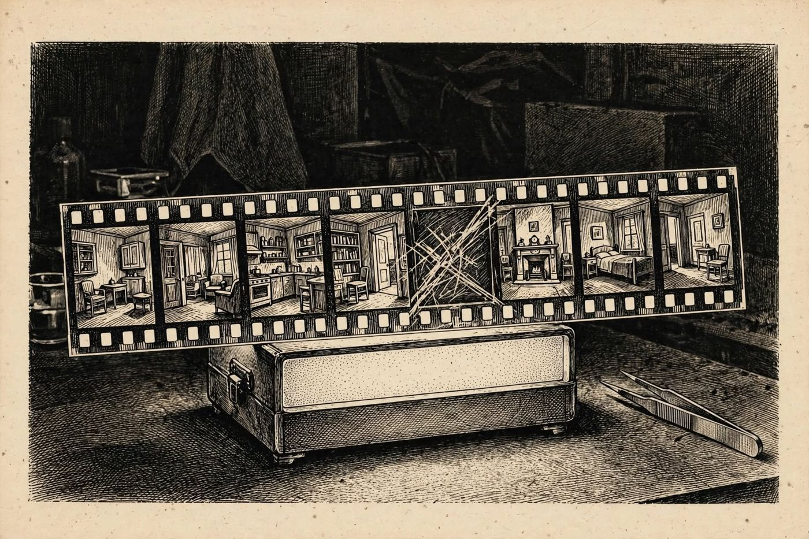

10 de diciembre
La cámara de Julian
Libro · págs. 42-45
Audio del día
Transcripción
«Abra, por favor… Necesito hablar con usted antes de que bajen los demás. Mentí en mi declaración, pero se lo suplico, escúcheme. Salí a las diez y cuarto con la cámara. Entré en la Sala del Reloj para fotografiar el Libro Vesper. Lombard estaba allí, en el sillón, sudando, frotándose la boca… Mire las copias que he revelado. Las horas que anoté al dorso coinciden con el reloj de pared. Se las entrego todas, pero no me deje solo.»

Intenta resolverlo primero. Abre solo lo que necesites, en este orden.
1Pista sutil
Sitúa primero las fotos que tienen la hora exacta anotada al dorso (F, B, D, G y E). Después coloca las fotos A, C y H fijándote en el reloj que se ve de fondo o en el número de página del libro que se abre en secuencia hacia adelante.
2Comprobación parcial
La primera foto de la secuencia es la F (22:18:12) y la segunda es la B (22:18:41).
3Pista fuerte
Para encajar A, C y H usa lo que se ve en cada una. H muestra la página 8 y un reloj a las 22:19. A es la página 10, que va entre la 9 y la 11. C muestra un reloj a las 22:22.
4Solución oficialSpoiler si no lo has intentado
Orden cronológico de fotos: F → B → H → D → A → G → C → E
F (22:18:12) | B (22:18:41) | H (reloj 22:19) | D (22:20:05) | A (pág. 10) | G (22:21:30) | C (reloj 22:22) | E (22:23:58).
Para el desenlace de la historia, vuelve al libro: la sección de soluciones está al final.